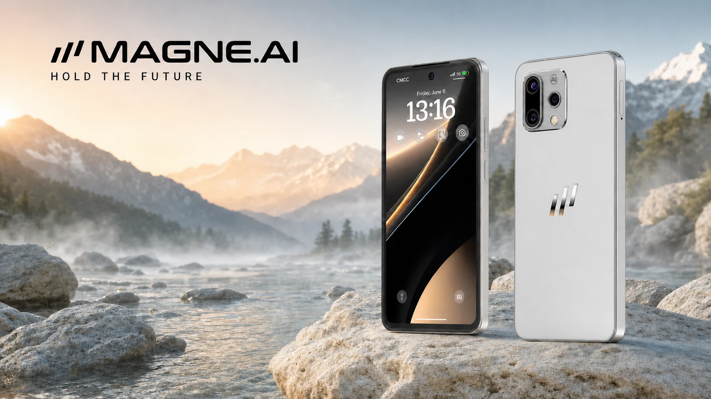

COVER STORYAI-NATIVE TERMINAL · DEVICE TRUST · VERIFIABLE OWNERSHIP
또 하나의 스마트폰이 아닌, 스마트 터미널.
소유권을다시 당신의 손에.
MAG1
신원, 결제, AI 에이전트가 안전하고 검증 가능한 디바이스 레이어에서 만납니다.

01모든 민감한 작업이 디바이스 밖으로 나갈 필요는 없습니다.
02신원과 결제에는 하드웨어 신뢰 기반이 필요합니다.
03진척은 약속이 아니라 검증 가능한 증거로 뒷받침되어야 합니다.
I하나의 디바이스.
THE SYSTEM
하나의 디바이스.
네 개의 증명 레이어.
01온디바이스 AILOCAL LANGUAGE · SPEECH · VISION클라우드 지원과 로컬 실행을 분명하고 독립적인 두 경로로 설계했습니다.→
02하드웨어 보안IDENTITY · SIGNING · PAYMENT민감한 작업은 보안 하드웨어와 Android 시스템 서비스에 연결됩니다.→
03Web3 인프라MAGNE L1 · M HASH L2네트워크 레이어는 장식적인 주장 대신 검증 가능한 공개 인프라입니다.→
04증거 아카이브COMPLIANCE · PROGRESS · STORIES문서, 마일스톤과 현장 기록을 독립적으로 확인할 수 있습니다.→
II / INTELLIGENCE
클라우드 AI는 지원을. 온디바이스 AI는 로컬 지능을.
두 개의 경로, 하나의 일관된 디바이스 경험.
Google Gemini는 시스템 어시스턴트 경로를 통해 접근할 수 있으며 MAG1의 로컬 AI 스택은 번역, 음성 처리와 디바이스 네이티브 워크플로를 지원합니다. 기능 가용성은 지역, 계정, 소프트웨어 및 적용되는 서비스 약관에 따라 달라집니다.
기술 세부 정보(번체 중국어) ↗III / SECURITY
신뢰는 애플리케이션 레이어 아래에서 시작됩니다.
보안 실행, 서명과 복구 가능한 소유권.
MAG1은 Android 서비스를 전용 보안 요소 경로와 연결해 키, 신원, 트랜잭션 워크플로를 보호합니다.
보안 아키텍처(번체 중국어) ↗IV / NETWORK
에이전트 경제를 위한 하드웨어에는 공개된 기반이 필요합니다.
MAGNE L1과 M Hash L2가 개방형 네트워크 레이어를 구성합니다.
공개 저장소와 테스트넷 탐색기를 통해 디바이스와 독립적으로 인프라 자체를 검증할 수 있습니다.
네트워크 세부 정보(번체 중국어) ↗V / EVIDENCE
진척은 진행 막대가 아닙니다. 기록입니다.
공개 문서, 실제 하드웨어와 현장 활동.
규정 준수 문서, 엔지니어링 마일스톤, EVT 하드웨어 기록과 이벤트 아카이브를 증거로 정리했습니다. 확인되지 않은 생산, 출하, 지역 정보를 ‘곧 공개’라는 말로 대체하지 않습니다.
공개 진척 확인(번체 중국어) ↗VI / COMPANY
공개 기록으로 설명되는 글로벌 제품 회사.
회사, 미디어와 검토 접근.
승인된 브랜드 자료는 Media Kit, 생태계 관계는 Partners, 기업·미디어·규정 준수·통제 문서 요청은 Contact에서 확인할 수 있습니다.
MAGNE.AI 문의(번체 중국어) ↗